Join a guided tour - photograph the birds of Helsinki!
We welcome all skill levels
In spring and summer, birds abound in Helsinki, and there's no better place than Suomenlinna to meet them up close. This constellation of islands, a UNESCO World Heritage site, is home to a variety of coastal species that delight visitors with their beauty and confidence. Ease of access makes it a prime location for the keen photographer.
Whether you've photographed birds for years, or just want to try it out, there is something for you in Suomenlinna. All you need is the willingness to explore. Bring your gear and your curiosity, and prepare to be charmed by the local feathered residents.
Hi, I'm Samuel, I'm a professional guide. I have experience with international customers, and I love photographing birds around Helsinki. In the field, I am known for my relaxed but dedicated attitude, and I adapt to your level of experience and your wishes for the evening. All my expertise and motivation are here to guide you around the islands and put you in position to capture great images.
This experience is for you if... you want to explore the wild side of Helsinki in a relaxed setting, get to know the local birds and photograph them without pressure. If you come from abroad, it's a brilliant way to meet the friendly birds of Helsinki in a picturesque setting. This is not for you if... you want to photograph as many species as possible in as little time as possible.
Dates
April 20 to July 20 2026: May 7 - July 20
Pick your day, please enquire!
Schedule
We meet in Kauppatori (Helsinki's central harbour) and travel to Suomenlinna by ferry. We will aim to arrive 3 hours before sunset, and shoot there until it's dark.
Targets
Barnacle Goose, Common Eider, Arctic Tern, Eurasian Oystercatcher, Common Gull, Northern Wheatear, White Wagtail
Recommended gear
A lens that reaches 300mm or more is a must. Another one in the 24-200mm range can offer surprising creative options.
Sturdy clothes to lie down on grass, gravel, rock and bird droppings.
A light jacket against the wind.
Water and snacks, as needed.
The languages I speak
English, French, some Spanish and some Finnish.
Bird names in all languages!
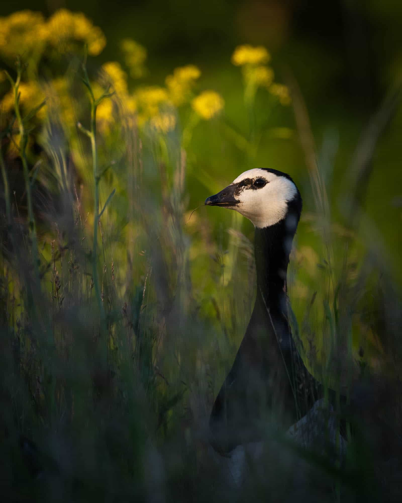
Barnacle Goose
What you pay for
Up to 4 hours of private and personalized tuition in bird photography.
Not included
Transportation (HSL ticket needed for the ferry)
Insurance
Food and other extras
Social and environmental responsibility
For each person I take on tour, I'm happy to donate 10€ to Suomen Luonnonsuojeluliitto, the Finnish Association for Nature Conservation.
They do tremendous work throughout the country to protect sea, forest, peatland... and the wild denizens of these places. I'm proud to support them!
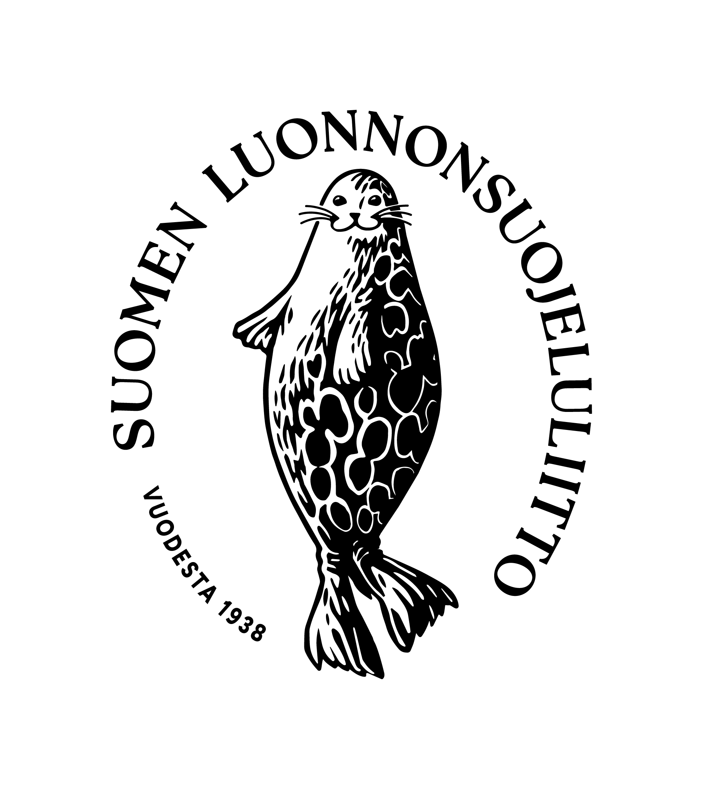
CONTACT ME TO BOOK YOUR TRIP
Payment
I will send you an invoice by email. You can pay me:
- by cash, when we meet
- by bank transfer, before we meet
- by Paypal or Wise, before we meet (with a small fee)
Accessibility
You can expect uneven surfaces, loose gravel and short but steep slopes.
However, it's possible to plan an easier route, so please get in touch if this is a concern!
Note: I do not use playback or baiting to attract birds.
SUOMENLINNA
Fairyland for birds
The star of the show is undoubtedly the Barnacle Goose. This gorgeous bird, bold of plumage and bolder of character, has conquered the rocky coast of Helsinki. In Suomenlinna, we'll find them wandering on the paths and the rocks, feeding in the grass or swimming in the sea. They arrive in late April and by the beginning of May, the females are sitting on eggs, while their mate stands guard nearby. If we keep our distances, we can observe this intimate moment without disturbing them. June is baby time: the tiny fluffballs are out, running everywhere under the supervision of their parents. They are adorable! As the season continues, they grow and start moulting into adult plumage.
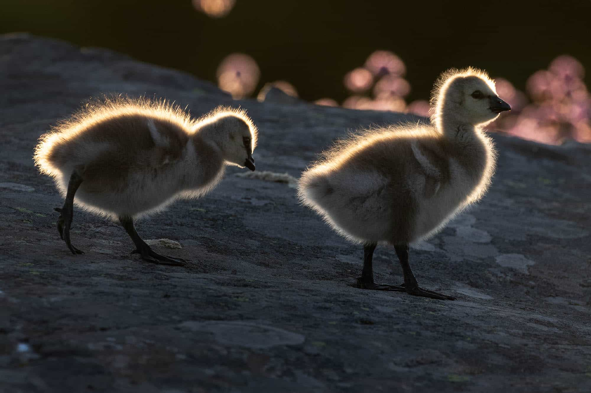
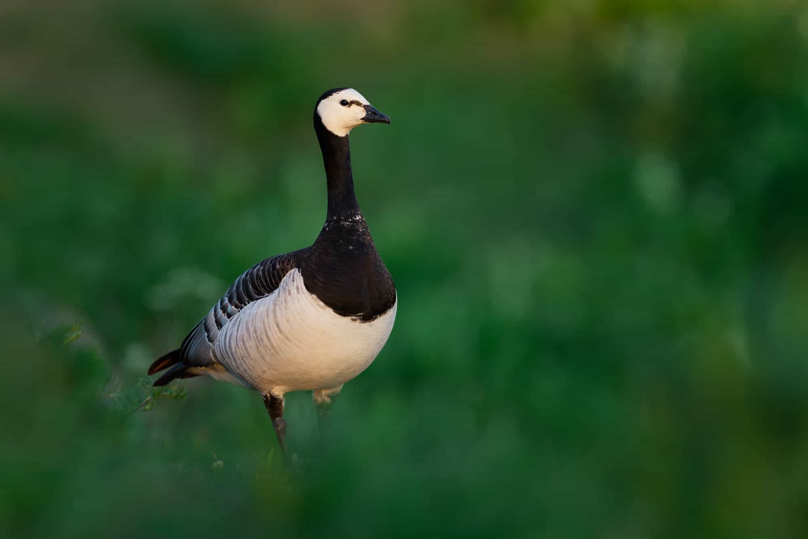
The Common Eider is another stunner, with its funny head and its plumage full of contrast. We'll find the males in May, but afterwards they'll move to their summer moulting grounds. Females take care of the chicks alone, sometimes gathering them in a creche where a few of them manage a lot of ducklings.
On the shore, we'll try to come near the Eurasian Oystercatcher, but it can be shy. If we are sneaky enough, we may obtain awesome eye-level images of this spectacular black, white and red wader. If we are super lucky, we might even see the babies tucked under their parent's wings to keep warm. Other waders we might encounter include the Common Sandpiper and the Common Redshank.
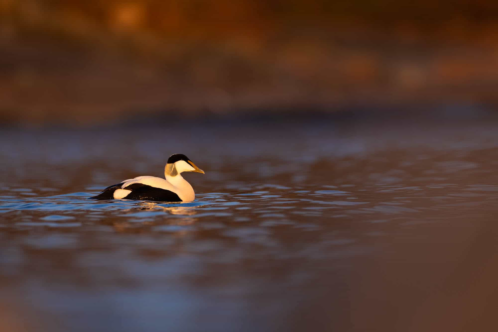
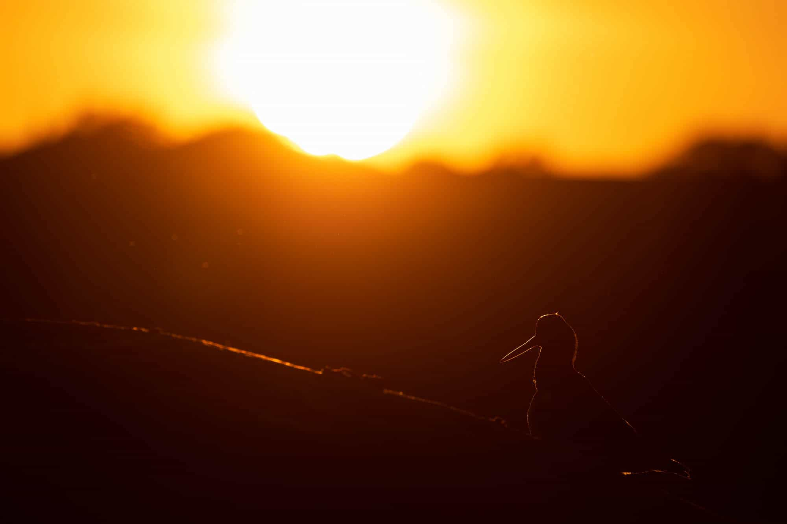
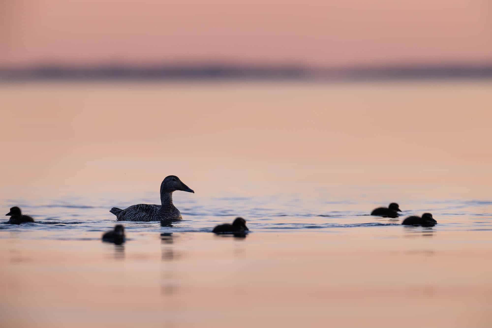
Around the islands, we'll find gulls and terns. Whether they are fishing, hunting ducklings, resting or quarelling, they are always entertaining. Capturing a Common Tern mid-flight is no easy feat, but since they tend to follow a repeating pattern, we can give it a go. It's fun!
Back on land, two songbirds steal the show. The White Wagtail is a familiar sight, but it's always on the move and sometimes approaches too close for our cameras to focus. You'll need to trigger before it's too late! On the other hand, the Northern Wheatear is not easily approached, but this talented songster has a few favourite rocks and trees to perch on that we can target.
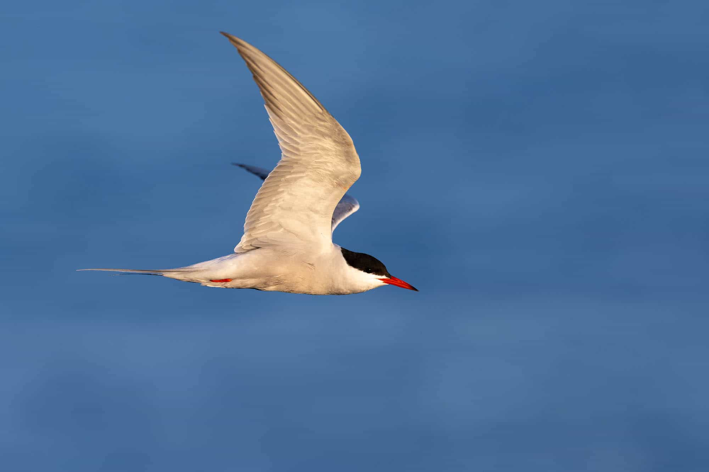
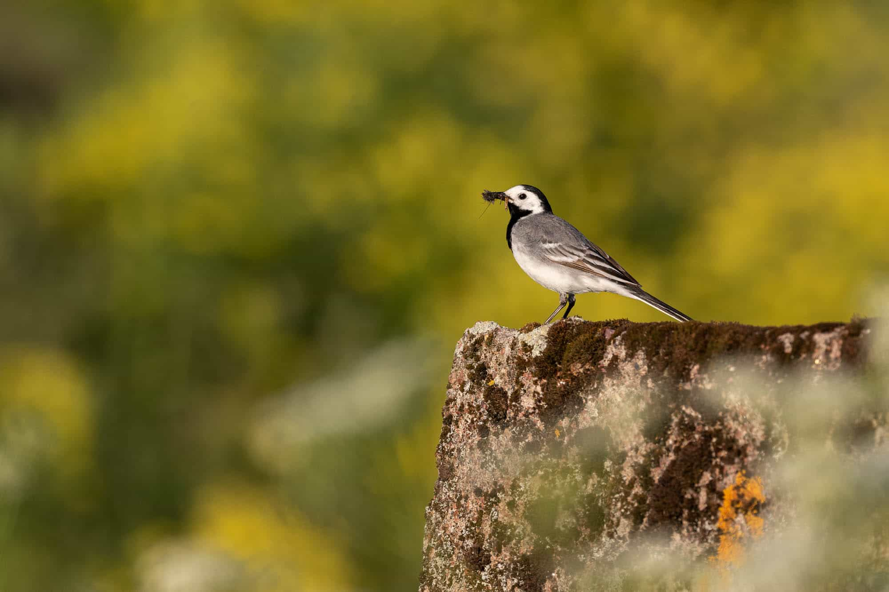
Other species we may encounter include Mute Swan, Eurasian Wigeon, Fieldfare and Barn Swallow. If we are super super lucky (!!), we might even find an American Mink or a Eurasian Otter... but don't count on it!
On tour
The meeting point is in Kauppatori, by the ferry departure kiosk. We'll typically depart on the larger ferry, so we can photograph the gulls that follow it. Once we are there, we'll walk to my secrets places, but we'll already encounter birds on the way: geese, wheatears, oystercatchers... they are everywhere!
In the field, I'm happy to adapt to your wishes. We can stop for every bird, or we can focus on the species you're most interested in. If you want, I can tell you about birds (behaviour, habitats, conservation...) or photography (settings, composition, field techniques...). When it comes to getting the shots, I like to lead by voicing my thought process, as it happens, but I'm also happy to show you the birds and let you work on your own. You choose!
I have carefully selected locations based on bird presence and photo opportunities, but we never know what we'll find. That's nature! So we'll walk around and make the most of our encounters. All tours are different, but they are always exciting. When the sun sets, we'll still have a short time to shoot before it's too dark. Then we'll start walking back to the pier, snapping our last blue hour images on the way, before the ferry takes us back to central Helsinki.
About Suomenlinna
Suomenlinna is an old fortress-island out of Helsinki, part of UNESCO World Heritage. The ferry that sails there runs every 20-40 minutes (even late into the evening), makes the crossing in only 15 minutes and requires a simple public transportation ticket (HSL zone A).
Suomenlinna isn't only a museum but also a place where people live. When we walk around, we'll be extra mindful not to invade their privacy. Fortunately, there's plenty of space for everyone.
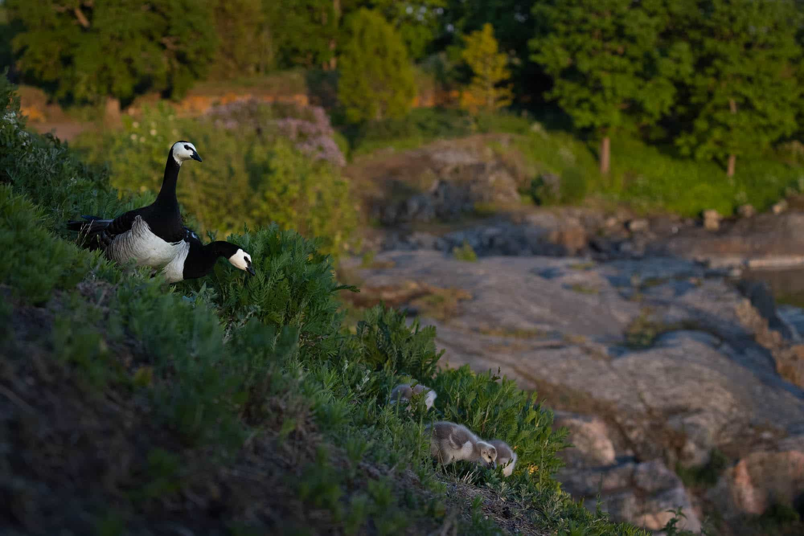
Barnacle Goose along the coast
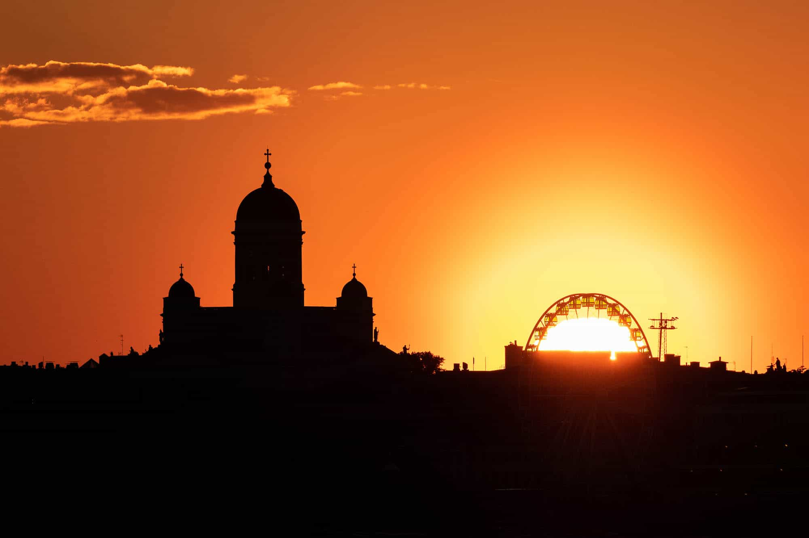
View towards Helsinki
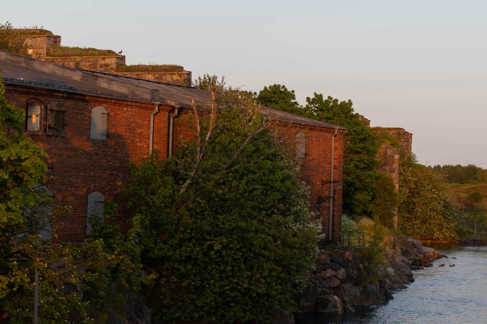
Barnacle Goose in Suomenlinna
Clothing
Suomenlinna is a windy place. Sometimes, it can be significantly colder there than in central Helsinki. Plan accordingly: wind jacket, gloves, scarf, beanie... it's better to carry a little too much than to be cold the whole evening!
In addition, you may want to kneel and lie down to get the best shots. If so, make sure you have the right clothes for that, as the ground may be dusty, wet or hold bird droppings.
Bring sturdy shoes. Suomenlinna being a former military island, there's an abundance of rocks, concrete and other obstacles on the ground.